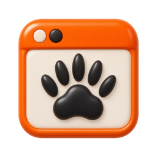
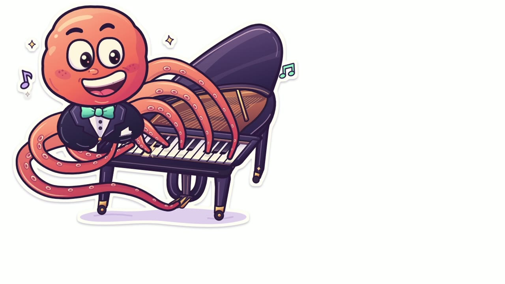

01


Осьминог за роялемThe octopus pianist
Eight Arms, Seven Keys: осьминог во фраке играет семью щупальцами на клавишах, восьмым жмёт педаль. Цикл 8 с, 207 SVG-анимаций, первый и последний кадры совпадают пиксель в пиксель.Eight Arms, Seven Keys: an octopus in a tailcoat plays the keys with seven arms and works the pedal with the eighth. An 8-second loop, 207 SVG animations, the first and last frames match pixel for pixel.
Выглядит как настоящий стикер, но стула нет: осьминог висит над роялем. Для такой идеи простенько.It looks like a real sticker, but there is no chair: the octopus floats at the piano. A bit plain for this idea.
77/10